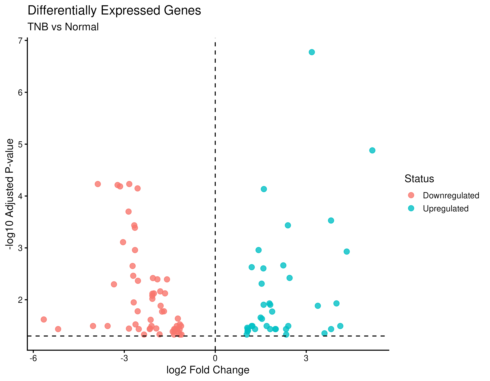

Differential Gene Expression and Functional Enrichment Analysis of TNB and Normal RNA-seq Samples
An end-to-end transcriptomic discovery pipeline implemented across Galaxy, R, and Bioconductor to characterize significant transcriptional shifts, loss of luminal differentiation markers, and exploratory oncogenic signaling pathways in Triple-Negative Breast tissue.
High-Resolution Expression & Pathway Plots
Interactive examination of volcano plots, clustered heatmaps, PCA 2D spatial embeddings, and KEGG pathway enrichment dotplots. Click any image to open the full-screen lightbox.

{kind=link}
{kind=link}
{kind=link}
{kind=link}
{kind=link}
Interactive Differentially Expressed Genes
Search, filter, and inspect the complete catalog of 94 statistically significant DEGs derived from DESeq2.
| Gene Symbol ↕ | Ensembl ID ↕ | Base Mean ↕ | Log₂ FC ↕ | Wald Stat ↕ | p-value ↕ | FDR padj ↕ | Regulation |
|---|
Enriched Biological Pathways & Gene Ontologies
KEGG pathway enrichment results categorized by directional regulation. Entrez IDs were mapped via org.Hs.eg.db for clusterProfiler functional analysis.
Galaxy & R Computational Workflow
The end-to-end RNA-seq processing history was constructed and executed in Galaxy, with downstream modeling, annotation, and visualizations rendered in R/Bioconductor.
Full Research Report Document
Comprehensive scientific documentation including Abstract, Introduction, Materials & Methods, Results, Discussion, Conclusion, References, and Appendices.
1. Abstract
RNA sequencing (RNA-seq) provides a high-throughput approach for investigating changes in gene expression between biological conditions. In this transcriptomic investigation, RNA-seq data from TNB and Normal samples were analyzed to identify differentially expressed genes and characterize their associated biological functions and pathways.
The analysis was performed primarily using the Galaxy platform, providing a reproducible workflow for quality control, read processing, alignment, gene-level quantification, and differential expression analysis. Three TNB samples and three Normal samples were analyzed. Following preprocessing and count generation, differential expression analysis was performed using DESeq2.
A total of 94 differentially expressed genes (DEGs) were identified, comprising 38 upregulated genes and 56 downregulated genes in the TNB condition relative to Normal samples. Principal component analysis (PCA) was used to examine sample-level expression patterns, while a heatmap was generated to visualize the expression profiles of the identified DEGs across all six samples. Functional interpretation was performed through Gene Ontology (GO) and KEGG pathway enrichment analyses.
2. Study Design & Methods
Six total biological samples were examined: 3 Normal baseline breast tissue samples (Normal_1, Normal_2, Normal_3) and 3 Triple-Negative Breast tissue replicates (TNB_1, TNB_2, TNB_3).
- Adapter Trimming & QC: fastp and FastQC
- Splice-aware Alignment: STAR against human GRCh38 reference genome
- Quantification: featureCounts yielding a 78,733 × 6 count matrix
- Differential Testing: DESeq2 negative binomial GLM with Wald test
- Significance Filtering: FDR padj < 0.05 and |log2FoldChange| > 1.0
- Enrichment: Bioconductor clusterProfiler and org.Hs.eg.db annotation packages
3. Key Results & Findings
The 94 identified DEGs demonstrate a severe transcriptomic disruption characteristic of triple-negative breast cancer. Specifically:
- Downregulation of Luminal Differentiation: Estrogen receptor (
ESR1, log2FC = -4.62) and fructose-1,6-bisphosphatase 1 (FBP1, log2FC = -4.82) were markedly suppressed in TNB. - Upregulation of Infiltration & Transport: Amino acid transporter
SLC6A14(log2FC = +5.21), GABA receptor subunitGABRP(log2FC = +6.08), and extracellular matrix glycoproteinFN1(log2FC = +3.12) were highly elevated in TNB. - PCA Segregation: PC1 accounted for 75.59% variance, separating Normal and TNB clusters with high fidelity.
4. Discussion & Limitations
The study establishes prominent transcriptional differences between TNB and Normal tissue. Although leading KEGG pathways (such as TNF signaling and Phospholipase D) exhibited low nominal p-values, their adjusted p-values exceeded 0.05. Therefore, these pathways should be considered exploratory hypotheses for targeted biochemical validation rather than definitive proof of pathway activation.
5. References
- Andrews, S. (2010). FastQC: A Quality Control Tool for High Throughput Sequence Data.
- Chen, S., et al. (2018). fastp: an ultra-fast all-in-one FASTQ preprocessor. Bioinformatics, 34(17), i884–i890.
- Dobin, A., et al. (2013). STAR: ultrafast universal RNA-seq aligner. Bioinformatics, 29(1), 15–21.
- Liao, Y., et al. (2014). featureCounts: an efficient general purpose program for assigning sequence reads. Bioinformatics, 30(7), 923–930.
- Love, M. I., Huber, W., & Anders, S. (2014). Moderated estimation of fold change and dispersion for RNA-seq data with DESeq2. Genome Biology, 15, 550.
- Yu, G., et al. (2012). clusterProfiler: an R package for comparing biological themes. OMICS, 16(5), 284–287.